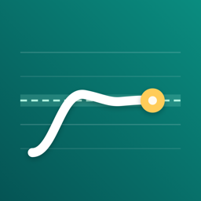

Privacy Policy
Pitchback collects no personal data.
- Microphone: Pitchback asks for the microphone so it can show and score your pitch. It listens only while a drill, the range check, the pitch monitor or a latency measurement is running, and it stops when you leave that screen or the app goes to the background. Audio is analyzed in memory on your device; it is never recorded, saved or sent anywhere.
- On your device only: your range, scores, practice history and settings are stored in the app's storage on this device. They are not sent to the developer or anyone else.
- No network services: there is no account, server, advertising, analytics or tracking. The app asks for no other permissions (no photos, location or contacts).
- Purchases: the optional one-time purchase is processed by Apple through the App Store. The developer does not receive your payment details.
- Deleting data: Settings › Reset progress removes your range, scores and history. Deleting the app removes all of its data. Whether app data is included in device backups such as iCloud Backup follows your iOS settings.
- Children: Pitchback does not collect data from anyone, including children.
If this policy changes, the new version will be posted on this page. Contact: ppupy1200@gmail.com · Effective October 2026
개인정보 처리방침
Pitchback은 개인정보를 수집하지 않습니다.
- 마이크: 음높이를 보여 주고 채점하려고 마이크를 사용합니다. 연습, 음역 진단, 음정 모니터, 지연 시간 측정 중에만 듣고, 그 화면을 나가거나 앱이 백그라운드로 가면 멈춥니다. 소리는 기기 메모리 안에서 분석하며 녹음·저장·전송하지 않습니다.
- 기기에만 저장: 음역, 점수, 연습 기록, 설정은 이 기기의 앱 저장 공간에만 저장되며 개발자나 다른 곳으로 보내지 않습니다.
- 네트워크 서비스 없음: 계정, 서버, 광고, 분석·추적 도구가 없습니다. 사진·위치·연락처 등 다른 권한은 요청하지 않습니다.
- 구입: 선택형 한 번 구입은 Apple App Store가 처리하며 개발자는 결제 정보를 받지 않습니다.
- 데이터 삭제: 설정 › ‘진도 초기화’로 음역·점수·기록을 지웁니다. 앱을 지우면 모든 데이터가 함께 지워집니다. iCloud 백업 등 기기 백업에 포함되는지는 사용자의 iOS 설정을 따릅니다.
- 어린이: 어린이를 포함해 누구의 데이터도 수집하지 않습니다.
방침이 바뀌면 이 페이지에 새 내용을 게시합니다. 문의: ppupy1200@gmail.com · 시행일 2026년 10월